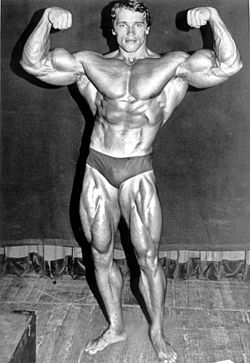

Bob Paris é um dos fisiculturistas mais elegantes e respeitados da história do esporte. Ele nasceu
em 14 de dezembro de 1959, em Columbus, Indiana, Estados Unidos, e se destacou nos anos 1980 pela
impressionante combinação de simetria, proporção e estética muscular. Seu maior título veio em 1983,
quando conquistou o Mr. America (AAU), vencendo tanto o título geral quanto o de melhor apresentação
de pose — algo que reforçou sua reputação como um verdadeiro artista do fisiculturismo.
Bob Paris sempre acreditou que o fisiculturismo era mais do que apenas tamanho muscular. Para ele,
era uma forma de arte viva, onde cada pose deveria ser expressiva e cada linha corporal
cuidadosamente trabalhada para transmitir harmonia. Essa visão diferenciada fez com que muitos o
considerassem o “Michelangelo” do fisiculturismo competitivo.
Uma curiosidade importante sobre sua vida é que, em 1989, Bob Paris se tornou o primeiro
fisiculturista profissional de renome a se assumir publicamente como gay, em uma época em que a
indústria era extremamente conservadora. Esse ato de coragem teve enorme impacto não só no esporte,
mas também na luta pelos direitos LGBTQIA+, transformando Bob em um símbolo de autenticidade e
integridade pessoal.
Além das competições, Bob também teve uma carreira de sucesso como autor, ator e palestrante, sempre
promovendo valores como autoaceitação, saúde mental e liberdade de expressão. Seu legado vai muito
além dos palcos, inspirando atletas e pessoas comuns a viverem com orgulho e autenticidade.

Mike Mentzer foi um fisiculturista norte-americano que marcou época não apenas por seu físico
impressionante, mas também por sua abordagem racional e inovadora do treinamento. Nascido em 15 de
novembro de 1951, em Ephrata, Pensilvânia, ele entrou para a história ao se tornar o primeiro
fisiculturista a receber uma pontuação perfeita em uma competição da IFBB — feito conquistado no Mr.
Universe de 1978. Seu corpo denso, simétrico e extremamente definido representava o auge do controle
estético e da densidade muscular, e seu desempenho nesse campeonato se tornou uma referência até
hoje.
O diferencial de Mentzer estava no método de treino que defendia: o Heavy Duty, uma abordagem
baseada em poucas séries levadas à falha máxima, com foco absoluto na intensidade e na recuperação.
Essa filosofia foi fortemente inspirada por Arthur Jones, criador das máquinas Nautilus e pioneiro
na ideia de que o crescimento muscular era mais sobre a qualidade do estímulo do que a quantidade.
Jones acreditava em treinos curtos e brutais, e Mentzer levou isso ao palco, provando que eficiência
e ciência podiam superar horas de volume tradicional.
Sua visão desafiou os modelos clássicos do fisiculturismo da época, conquistando tanto seguidores
quanto críticos. Após uma aposentadoria precoce, motivada pelo controverso Mr. Olympia de 1980, Mike
se dedicou a espalhar sua metodologia por meio de livros, consultorias e seminários. Ele faleceu em
2001, mas deixou um legado que ainda inspira atletas a treinarem com inteligência, disciplina e
intensidade — seguindo a linha traçada por ele e por Arthur Jones: menos volume, mais resultado.

Frank Zane é um dos fisiculturistas mais admirados da história, conhecido por representar a ideia de
físico estético e clássico. Ele nasceu em 28 de junho de 1942, em Kingston, Pensilvânia, Estados
Unidos. Durante sua carreira, Frank conquistou diversos títulos importantes, sendo o mais marcante a
vitória no Mr. Olympia em três anos consecutivos: 1977, 1978 e 1979. Seu físico era caracterizado
por músculos definidos, proporções perfeitas e uma linha de cintura extremamente fina, o que o
diferenciava dos competidores mais pesados e volumosos da época.
Zane sempre priorizou a simetria, o detalhamento muscular e a estética acima do tamanho absoluto. Em
vez de focar apenas na massa muscular bruta, ele elevou o fisiculturismo a uma forma de arte, onde a
harmonia entre as partes do corpo era o mais importante. Sua abordagem inspirou gerações de atletas
que buscam um físico elegante e equilibrado.
Uma curiosidade interessante é que Frank Zane é formado em Ciências e também trabalhou como
professor de matemática e química antes de se dedicar totalmente ao fisiculturismo. Além disso, após
sua aposentadoria, ele continuou a contribuir para o esporte através de livros e cursos de
treinamento.
Frank Zane é até hoje considerado o “padrão de ouro” para aqueles que acreditam que a estética é tão
importante quanto a força no fisiculturismo.

Arnold Schwarzenegger é, sem dúvida, o fisiculturista que projetou o esporte para os holofotes
globais. Nascido em 30 de julho de 1947 em Thal, na Áustria, ele começou a levantar peso ainda na
adolescência e mudou-se para a Inglaterra aos 20 anos para disputar o Mr. Universe da NABBA,
vencendo-o em 1968 e tornando-se o mais jovem campeão até então. Seu domínio nas competições ficou
ainda mais evidente quando, já nos Estados Unidos, conquistou o Mr. Olympia seis vezes consecutivas,
de 1970 a 1975, antes de um breve retorno vitorioso em 1980.
Arnold combinava um físico de proporções quase perfeitas — com peitoral volumoso, cintura fina e
pernas bem desenvolvidas — a uma abordagem mental extraordinária: sua famosa “visão do quadro-negro”
incentivava-o a visualizar o corpo que queria construir antes mesmo de entrar na academia. Essa
mentalidade visionária, aliada ao volumoso volume de treino e à técnica apurada, definiu o padrão do
chamado “Golden Era” do fisiculturismo, quando estética, simetria e apresentação teatral andavam de
mãos dadas.
Uma curiosidade marcante é que, durante a preparação para seu primeiro Mr. Olympia, Arnold dormia
com halteres ao lado da cama para “despertar os músculos” logo ao acordar — um hábito que ilustra
sua dedicação extrema. Após se aposentar das competições, Schwarzenegger seguiu carreira como ator
de blockbuster, tornou-se governador da Califórnia entre 2003 e 2011 e, ainda hoje, permanece uma
voz ativa no mundo do fitness e do fisiculturismo, lançando programas de treino, livros e
seminários. Seu legado vai muito além dos troféus: Arnold transformou o fisiculturismo em cultura
pop, inspirando milhões a acreditar que corpo e mente são um só projeto a ser esculpido com
disciplina e criatividade.

Dorian Yates é um ícone do fisiculturismo moderno, nascido em 19 de abril de 1962, em Birmingham, na
Inglaterra. Conhecido pelo apelido de “The Shadow” (A Sombra), ele venceu o Mr. Olympia seis vezes
consecutivas, de 1992 a 1997, consolidando-se como o líder da chamada “era dos mass monsters”. Seu
físico era marcado por um desenvolvimento posterior extraordinário — especialmente nas costas — e
por uma densidade muscular rara, resultado de uma abordagem de treino de alta intensidade que
combinava séries pesadas até a falha e foco extremo na técnica.
Ao contrário de muitos atletas que buscavam visibilidade constante, Dorian mantinha um perfil
discreto fora do palco, surgindo poucas vezes em público até a hora de competir. Essa postura
reservada, aliada ao seu físico espetacular, deu origem ao apelido que o acompanhou por toda a
carreira. Durante os treinos, Yates era famoso por seu compromisso quase monástico: sessões curtas,
extremamente focadas e sempre levando cada série ao limite, um método que elevou o padrão de esforço
dentro das academias.
Uma curiosidade marcante é que, em 1994, Dorian sofreu uma lesão grave no ombro durante uma puxada
na barra fixa pesada, o que o levou a reinventar seu programa de fortalecimento e reabilitação —
algo que muitos atletas usam até hoje como referência em prevenção de lesões e recuperação muscular.
Após se aposentar das competições, Yates fundou a própria linha de suplementos e dedicou-se à
divulgação de conteúdo sobre treinos, dieta e recuperação, inspirando milhares de praticantes ao
redor do mundo a seguir um caminho de disciplina e respeito ao corpo.

Chris Bumstead, conhecido mundialmente como Cbum, é hoje um dos maiores nomes do fisiculturismo na
categoria Classic Physique. Ele nasceu em 2 de fevereiro de 1995, em Ottawa, no Canadá. Cbum ganhou
enorme destaque ao conquistar o título de Mr. Olympia Classic Physique por seis vezes consecutivas,
de 2019 a 2024, tornando-se um dos maiores campeões da história da categoria.
Seu físico é a perfeita combinação de tamanho, definição, simetria e linhas clássicas, resgatando o
estilo dos grandes campeões da Era de Ouro, como Arnold Schwarzenegger e Frank Zane, mas com um
toque moderno de densidade muscular. O diferencial de Chris Bumstead é sua capacidade de apresentar
uma linha de cintura extremamente fina, um peitoral cheio, dorsais amplos e poses impecáveis que
valorizam ainda mais suas proporções.
Uma curiosidade é que, além do sucesso nos palcos, Cbum se tornou um fenômeno fora das competições,
com milhões de seguidores nas redes sociais. Ele é admirado tanto pela sua humildade quanto pela sua
dedicação aos treinos e à disciplina alimentar. Apesar de já ter enfrentado sérios problemas de
saúde, como a Doença de Berger (uma condição autoimune que afeta os rins), Chris seguiu competindo e
melhorando a cada ano, o que só aumentou ainda mais sua popularidade e respeito no meio.
Hoje, Cbum é considerado o maior representante do fisiculturismo clássico da atualidade e inspira
milhares de atletas pelo mundo a buscar a combinação perfeita entre força, estética e consistência.